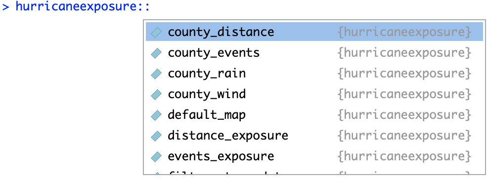

With R, you can create packages that are exclusively or mainly created to share data. Some researchers are creating and publishing this type of “data package”, and some may be relevant to your research. These packages provide access to open datasets that the package maintainer collected and processed and is now making available as an R package, but the data is static (as of the last version of the package), rather than interfacing to pull the most recent data. However, this set-up can achieve more stability—it won’t be broken by a change in an online API.
This package is too big for CRAN to host, so we have it posted through our own package
repository.12 For more on how and why we did this, see
an article we wrote about the
process for The R Journal. Because of this, you’ll need to take a few extra steps
to download and install the package:13 If you don’t have the drat package, install it in
the usual way with install.packages("drat").
library(drat)
addRepo("geanders")
install.packages("hurricaneexposuredata")
install.packages("hurricaneexposure")Once you’ve installed both the hurricaneexposuredata and hurricaneexposure packages, you
can load them as usual to access both the data and some functions to work with them:
library(hurricaneexposuredata)
library(hurricaneexposure)The hurricaneexposure package has a series of functions that let you explore different
exposures during storms. For example, to get the storms where either New York County, NY,
or Suffolk County, MA, (which includes Boston) were exposed to tropical storm-level winds
(17.5 m/s or higher), you can run:14 For any of these functions, you can find out what parameters
to include, and in what format, but opening the helpfile for the function. For example, once you’ve
loaded the hurricaneexposure package, you can open the helpfile for the county_wind function
by calling ?county_wind. Also helpful for navigating packages: take advantage of the package::function
notation and RStudio’s tab completion to look up the names of functions in a package. For example,
type hurricaneexposure::. A pop-up window should show up with all the functions in the package (press
Tab if the pop-up doesn’t automatically open).

knitr::include_graphics("images/tab_completion_example.png")county_wind(counties = c("36061", "25025"),
start_year = 1988, end_year = 2015,
wind_limit = 17.5)## storm_id fips vmax_sust vmax_gust sust_dur gust_dur
## 1 Bob-1991 25025 26.46639 39.43492 210 570
## 2 Bob-1991 36061 18.19559 27.11142 0 480
## 3 Bertha-1996 25025 29.64453 44.17035 240 525
## 4 Bertha-1996 36061 28.95496 43.14289 180 540
## 5 Floyd-1999 25025 24.46946 36.45949 345 750
## 6 Floyd-1999 36061 20.50178 30.54765 60 315
## 7 Hanna-2008 25025 18.36505 27.36392 0 150
## 8 Hanna-2008 36061 19.25390 28.68832 0 195
## 9 Irene-2011 36061 25.68553 38.27144 165 510
## 10 Sandy-2012 36061 21.99213 32.76827 225 795
## closest_time_utc storm_dist local_time closest_date
## 1 1991-08-19 20:00 27.042565 1991-08-19 16:00 1991-08-19
## 2 1991-08-19 15:00 161.571830 1991-08-19 11:00 1991-08-19
## 3 1996-07-14 01:15 38.177990 1996-07-13 21:15 1996-07-13
## 4 1996-07-13 19:45 16.966013 1996-07-13 15:45 1996-07-13
## 5 1999-09-17 07:45 51.254726 1999-09-17 03:45 1999-09-17
## 6 1999-09-17 00:15 45.408483 1999-09-16 20:15 1999-09-16
## 7 2008-09-07 07:15 6.202866 2008-09-07 03:15 2008-09-07
## 8 2008-09-07 01:45 29.916672 2008-09-06 21:45 2008-09-06
## 9 2011-08-28 13:15 5.796733 2011-08-28 09:15 2011-08-28
## 10 2012-10-30 00:30 158.040788 2012-10-29 20:30 2012-10-29If you look up events based on flood events, you can instead run the
county_events function:
county_events(counties = c("36061", "25025"),
start_year = 1996, end_year = 2015,
event_type = "flood")## fips storm_id closest_time_utc storm_dist local_time
## 1 25025 Dennis-1999 1999-09-08 08:00 390.047523 1999-09-08 04:00
## 2 36061 Floyd-1999 1999-09-17 00:15 45.408483 1999-09-16 20:15
## 3 36061 Allison-2001 2001-06-17 14:15 158.909890 2001-06-17 10:15
## 4 36061 Frances-2004 2004-09-09 13:30 379.343696 2004-09-09 09:30
## 5 36061 Ivan-2004 2004-09-18 17:45 311.346881 2004-09-18 13:45
## 6 36061 Jeanne-2004 2004-09-29 06:30 222.900157 2004-09-29 02:30
## 7 36061 Beryl-2006 2006-07-20 22:15 207.358443 2006-07-20 18:15
## 8 36061 Barry-2007 2007-06-04 15:45 148.251718 2007-06-04 11:45
## 9 36061 Irene-2011 2011-08-28 13:15 5.796733 2011-08-28 09:15
## 10 25025 Sandy-2012 2012-10-29 22:00 433.295980 2012-10-29 18:00
## 11 25025 Andrea-2013 2013-06-08 11:30 45.412565 2013-06-08 07:30
## 12 36061 Andrea-2013 2013-06-08 06:45 92.381282 2013-06-08 02:45
## closest_date
## 1 1999-09-08
## 2 1999-09-16
## 3 2001-06-17
## 4 2004-09-09
## 5 2004-09-18
## 6 2004-09-29
## 7 2006-07-20
## 8 2007-06-04
## 9 2011-08-28
## 10 2012-10-29
## 11 2013-06-08
## 12 2013-06-08The hurricaneexposure package also has functions for mapping the exposure
data for specific storms. For example, to see the rainfall fro Hurricane Ivan in
2004, you can run:
map_counties(storm = "Ivan-2004", metric = "rainfall")
From this map, you can see that the rain from this storm extended into New England, even after the storm looped back around to the east and south. This is why New York City had heavy rainfall (and flooding) from this event, but not tropical storm-level winds.
For more on the hurricaneexposure package, see its vignette.